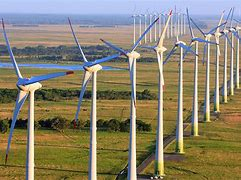

¿Qué es la energía eólica?

La energía eólica se genera a partir del movimiento del aire. Las turbinas eólicas convierten la energía cinética del viento en electricidad.La energía eólica es una forma de energía renovable que se obtiene a partir del viento.
La energía eólica es la energía obtenida del viento, que se aprovecha mediante aerogeneradores para generar electricidad. Esta forma de energía se basa en el principio de convertir la energía cinética del viento en energía mecánica y, finalmente, en energía eléctrica. Es una fuente de energía renovable, sostenible y limpia, ya que no produce emisiones contaminantes durante su uso. Se utiliza en diversas aplicaciones, desde grandes parques eólicos hasta sistemas más pequeños que abastecen comunidades locales.
Utiliza aerogeneradores, que son dispositivos diseñados para convertir la energía cinética del viento en energía eléctrica.
A continuación, te detallo sus aspectos más relevantes:
1.Principio de Funcionamiento
El viento es el movimiento del aire causado por diferencias de presión en la atmósfera. Cuando el viento sopla, su energía cinética se puede capturar a través de las palas de un aerogenerador. Estas palas están diseñadas para girar cuando el viento las golpea, lo que hace que un rotor conectado a un generador eléctrico también gire, produciendo electricidad.
2.Componentes de un Aerogenerador
Palas: Generalmente de material compuesto, tienen un diseño aerodinámico que maximiza la captura de energía del viento.
Rotor: Conjunto de palas que giran con el viento.
Generador: Convierte la energía mecánica del rotor en energía eléctrica.
Torre: Eleva el rotor a una altura donde el viento es más constante y fuerte.
Sistema de control: Optimiza la orientación del aerogenerador para maximizar la captura de viento.
3.Tipos de Aerogeneradores
Aerogeneradores de eje horizontal: Tienen un rotor orientado horizontalmente y son los más comunes. Se instalan en terrenos altos para aprovechar mejor el viento.
Aerogeneradores de eje vertical: Tienen un rotor orientado verticalmente y pueden captar viento de cualquier dirección, aunque son menos eficientes.
4.Ventajas de la Energía Eólica
Renovabilidad: El viento es una fuente inagotable en escalas humanas.
Bajas emisiones de carbono: Su uso no produce gases de efecto invernadero durante la operación.
Costos en descenso: La tecnología ha avanzado, reduciendo los costos de instalación y operación.
Desarrollo local: La instalación de parques eólicos puede generar empleo y desarrollo económico en las comunidades locales.
5.Desventajas y Desafíos
Intermitencia: La producción de energía depende de la disponibilidad del viento, lo que puede ser variable.
Impacto visual y sonoro: Los aerogeneradores pueden ser considerados poco estéticos y generan ruido.
Impacto en fauna: Existen preocupaciones sobre su impacto en aves y murciélagos.
6.Aplicaciones de la Energía Eólica
Parques eólicos: Grandes instalaciones que producen electricidad a gran escala, conectadas a redes eléctricas.
Sistemas de energía aislada: Aerogeneradores individuales que suministran energía a comunidades remotas o instalaciones específicas.
7. Perspectivas Futuras
La energía eólica está en constante evolución, con investigaciones enfocadas en mejorar la eficiencia de los aerogeneradores, desarrollar turbinas más grandes y adaptar tecnologías para el uso en alta mar, donde los vientos son más fuertes y constantes.
8.Conclusión
La energía eólica es una de las formas más prometedoras de energía renovable, contribuyendo significativamente a la transición hacia un futuro energético más sostenible. Con el apoyo adecuado en términos de inversión y políticas, puede desempeñar un papel clave en la lucha contra el cambio climático y la reducción de la dependencia de combustibles fósiles.